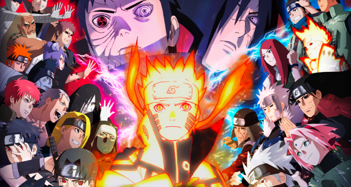

L'origine de Naruto se déroule dans un monde rétro-futuriste où, bien que de nombreuses technologies modernes aient vu le jour, les ninjas et les samouraïs sont restés de véritables puissances militaires. Chaque pays a un village, qui représente la force militaire du pays, dirigé par un Kage. Les villages, à travers leurs ninjas, se livrent des guerres les uns aux autres, à petite ou grande échelle, que ce soit pour obtenir des caractéristiques avantageuses propres aux villages ennemis, ou pour soumettre un autre village et gagner en puissance.
Dans ce monde ninja, il existe neuf créatures gigantesques, appelées les « Démons à queues », qui peuvent être scellées dans un humain après une cérémonie. L'humain devient un hôte et dispose alors de la puissance du démon. Douze années avant le début du récit, l'une de ces créatures attaque le village caché de feuille du Pays du Feu, Konoha. Elle est capturée et la moitié de son esprit a été scellée dans un nouveau-né nommé Naruto Uzumaki par le quatrième Hokage : Minato Namikaze, faisant de lui l'hôte du démon à neuf queues, Kyûbi.
Source 